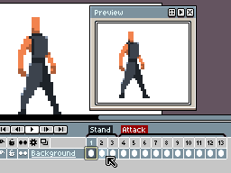

用 Aseprite 做第一个像素动画：从零到循环精灵图只需 15 分钟
装好 Aseprite、建对画布、打开洋葱皮，跟着五步做完一个能直接丢进游戏引擎的弹跳小球循环——新手练完就能理解逐帧动画的骨架。
这篇教程结束时，你会在 Aseprite 里做出一个弹跳小球的循环像素动画，带挤压拉伸形变，能直接导出 Sprite Sheet 丢进 Unity 或 Godot。全程 15 分钟，从零开始。
准备：三件事先搞定
在动手之前，确认下面三件事：
第一，装好 Aseprite。 你需要去Aseprite官网拿安装包。个人用途可以从源码自己编译，想省事就直接从官方下载装——省的是编译那一步。Windows、macOS、Linux 都支持。
第二，画布尺寸选对。 打开 Aseprite 后 File → New Sprite，这一步别随便填。像素画的尺寸越小越有"像素味"，弹跳小球这种练习选 16×16 就够了——256 个像素能画出的东西比你想象的多。颜色模式选 RGBA（默认就是），Frame Rate 先留着 24，后面随时改。
这里注意：画布一旦建错尺寸，缩小会裁掉像素、放大会引入空白边。建之前想 10 秒，比事后改省 10 分钟。
第三，时间轴面板可见。 Aseprite 的界面是可自定义的，如果你看不到底部的时间轴，按 Tab 键切换显示。桌面版默认会显示，但如果之前调过布局可能被隐藏了。
第一步：画第一帧——落地的小球
在第 1 帧画一个绿色小球。别急着画圆——像素画不用硬套几何图形，而是一格一格点：
- 选铅笔工具（快捷键 B），像素大小设 1
- 选一个深绿色当主色，在画布偏上的位置点出一个圆形轮廓
- 填内部（快捷键 G 是油漆桶），再用一个浅绿色在左上角点两三笔高光
- 最后用更深的绿色在右下角点阴影——一个立体小球就出来了
16×16 的画布里，小球占 8×8 就好。太大会没空间做位置变化，太小看不清形变。
画完之后先按一次 Ctrl+S。别迷信自动保存——Aseprite 从 2000 年到现在都没有自动保存功能，社区解释过：专业工具不想用后台进程打断创作节奏。数据恢复是救命稻草，不是日常流程。具体恢复操作和临时文件位置可以去Aseprite文档查。
第二步：开洋葱皮，复制帧
画逐帧动画和画静态图最大的区别，就是你能看到前后帧。Aseprite 的洋葱皮（Onion Skin）就是干这个的——把相邻帧以半透明影子叠在当前画面上。
- 点时间轴工具栏上的洋葱皮图标（或者直接按
;键） - 默认前后各显示 2 帧，够用了——动作幅度小就调 1，动作快调到 3~4
- 时间轴里右键当前第 1 帧 → Copy Frame，或者选中后按 Ctrl+Shift+D
- 现在你有第 1 帧和第 2 帧两张一模一样的画面了
打开洋葱皮之后你会发现，第 2 帧上半透明地叠着第 1 帧的影子。这就是你对位的参照——让第 2 帧的小球沿着一条合理的路径往下走。

别急着跳到下一步。先把洋葱皮调熟——开关几次、改改前后帧数，感受一下"有参照"和"没参照"画动画的区别。
第三步：逐帧画弹跳——位置 + 形变
现在是真正的动画部分。弹跳小球不是从上往下再回来就完了——关键在于挤压拉伸（Squash & Stretch）。这是动画师的第一课，也是像素画里最能体现"生动"的技巧。
弹跳过程拆成 4 帧来画：
| 帧号 | 小球状态 | 怎么做 |
|---|---|---|
| 1 | 最高点（正常比例 8×8） | 起始帧，已经画好 |
| 2 | 下落中（微拉长 7×9） | 小球往下挪 4 格，纵向拉长 1 像素、横向收 1 像素 |
| 3 | 落地瞬间（压扁 10×6） | 小球到画布底部，横向撑开到 10 像素、纵向压到 6 像素——总体积不变，扁了就必须宽 |
| 4 | 弹起中（微拉长 7×9） | 和第 2 帧对称，往上挪、拉长成椭圆形 |
| 5 | 回到最高点（正常比例 8×8） | 和第 1 帧一模一样，形成循环 |
怎么改形状？ 铅笔 + 橡皮擦（快捷键 E）逐格调整就行——像素画没有变形工具能帮你自动算，全靠手点。但好处是像素少，改不了几格。
每画完一帧，复制它、在新帧上改。别在同一帧上反复改来改去——帧是独立的，画砸了删帧重画比在同一帧里修修补补快。
画完之后按 Enter（桌面版）或者时间轴上的播放按钮预览。如果弹跳看起来像一块木头在飘——检查一下是不是漏了挤压拉伸；如果小球看起来"跳得没力气"——检查落地帧是不是压得不够扁。
第四步：设播放方式——乒乓省帧大法
时间轴画完了，但直接播放默认是正向循环（1→2→3→4→5→1）。对于弹跳这种对称动作，Aseprite 有个省帧神器叫 乒乓模式（Ping-Pong）：
- 在时间轴左侧的帧选择器里，框选全部 5 帧
- 右键 → New Tag（给这段动画起个标签）
- 方向（Direction）下拉选 Ping-Pong
- 播放类型选 Forward（或者 Reverse，看你想让它先弹还是先落）
乒乓模式的效果是：1→2→3→4→5→4→3→2→1 循环。相当于你只画了半个动作，回程自动补上。待机呼吸、光标闪烁、水面波纹——所有往复动作都能用这个省帧。

这里提一个容易踩的坑：Ping-Pong 模式下起点帧和终点帧不要一模一样。上面的例子里第 1 帧和第 5 帧是同一个位置、同一个形状，乒乓播放时会有一瞬间的卡顿。简单的解法是把第 5 帧删掉，变成 1→2→3→4→3→2→1——卡顿就没了。
第五步：导出 Sprite Sheet
动画做完了，最后一步是把它变成游戏引擎能吃的格式。File → Export Sprite Sheet：
- Layout 选 Horizontal Strip（横向一排）——Unity 和 Godot 默认都认这个
- Frame Padding 设 2 像素，引擎采样时不容易串帧
- Output 选 PNG，保存到你的项目 assets 目录
- 如果你的游戏用的是 Godot，直接导出
.ase原生格式也行——Godot 4.0+ 原生支持 Aseprite 文件
导出完把 PNG 拖进 Unity/Godot，引擎会自动把每一行像素切成独立帧，设置播放速率就是一个能用的动画组件了。
新手最容易翻车的三个点
第一，不做备份，崩溃了哭。 Aseprite 没有自动保存，数据恢复只保留两周临时文件，磁盘坏了或文件被手动删了就彻底没了。最低纪律是每 10 分钟按一次 Ctrl+S，推荐每天开工时 Save As 加日期后缀，工程文件存在云同步文件夹里。
第二，洋葱皮开着就画细节。 洋葱皮的半透明影子会干扰你看清当前帧的像素，尤其是画高光、阴影这些精细调整的时候。画细节时关掉，画位置对位时再打开——别全程开着不关。
第三，画布放大非整数倍看预览。 任何时候预览像素图，必须整数倍（×2、×3、×4）。非整数倍缩放（比如 Aseprite 默认的 100% 但你屏幕 DPI 不是整数倍缩放）会让相邻像素合并成中间色、边缘模糊。发朋友圈之前先整倍放大截图，或者直接导出 ×4 PNG 再发。
接下来还能玩什么
弹跳小球练完之后，下一个里程碑是走路循环——6~8 帧，四个方向（上、下、左、右）。那时候你会真正体会到：洋葱皮从"可选辅助"变成"必开工具"，因为走路的姿势变化比弹跳复杂得多，没有参照根本对位不准。
如果打算长期用，还可以翻一下 Aseprite 文档里的调色板管理和 Lua 脚本——调色板能让你在多帧多图层之间保持颜色一致，脚本则能批量做重复操作（比如给一堆 Sprite 加水印、批量导出不同尺寸）。官方社区里有不少现成的脚本可以直接拿来用，不用自己从零写。
完整的调色板预设和 Lua 脚本示例我也整理了一份，在GitHub、Gitee和GitCode三个地方都能拿到——国内访问优先 Gitee，备份也更保险。